토목산업기사 (2004-09-05 기출문제)
1과목: 응용역학
1. 그림과 같은 구조물에서 BC 부재가 받는 힘은 얼마인가?
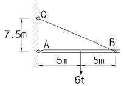
- 1.8t
- 2.4t
- 3.75t
- 5.0t
(정답률: 알수없음)

2. 도형의 도심을 지나는 축에 대한 단면 1차 모멘트의 값은?
- 0 (zero)이다.
- 0 보다 크다.
- 0 보다 작다.
- 0 보다 클 때도 있고 작을 때도 있다.
(정답률: 알수없음)
3. 사다리꼴 단면에서 x 축에 대한 단면 2차 모멘트값은?
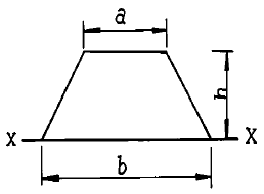
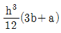
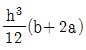
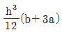
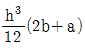
(정답률: 알수없음)
4. 길이 8m의 강봉에 인장력 15t을 가했을 때 강봉의 늘음량이 0.2cm 였다면 이때 강봉의 지름은? (단, 탄성계수는 2.1×106kg/cm2이다.)
- 52.6mm
- 56.3mm
- 60.3mm
- 64.7mm
(정답률: 알수없음)
5. 그림과 같은 1차 부정정보의 B점에서의 수직반력이 옳게 된 것은?
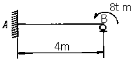
- RB=1.5t(↑)
- RB=2.0t(↑)
- RB=2.5t(↑)
- RB=3.0t(↑)
(정답률: 알수없음)
6. 지간이 12m 인 단순보 AB 위를 그림과 같은 이동하중이 통과하고 있다. 이때 지간 중앙 C점에 대한 최대 휨모멘트의 크기는?
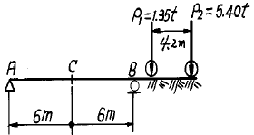
- 17.415 t·m
- 19.214 t·m
- 21.432 t·m
- 23.429 t·m
(정답률: 알수없음)
7. I형 단면의 최대 전단응력은? (단, 전단력은 10t이다.)
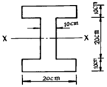
- 15 kg/cm2
- 25 kg/cm2
- 35 kg/cm2
- 45 kg/cm2
(정답률: 알수없음)
8. 그림과 같은 부정정보를 정정보로 하기 위해서는 활절(hinge)이 몇 개 필요한가?
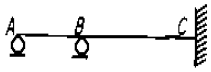
- 1개
- 2개
- 3개
- 4개
(정답률: 알수없음)
9. " 탄성체가 가지고 있는 탄성 변형에너지를 작용하고 있는 하중으로 편미분하면 그 하중점에서 작용 방향의 변위가 된다."는 정리(theorem)는?
- Maxwell의 상반정리
- Mohr의 모멘트 면적정리
- Clapeyron의 3연 모멘트법
- Castigliano의 제 2정리
(정답률: 알수없음)
10. 다음 그림의 트러스에서 DE의 부재력은?
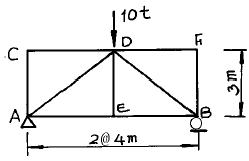
- 0 t
- 2 t
- 5 t
- 10 t
(정답률: 알수없음)
11. 그림과 같은 정정 아치(arch)의 지점 A의 수평반력은?
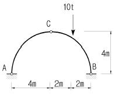
- 1 t
- 1.5 t
- 2 t
- 2.5 t
(정답률: 알수없음)
12. 장주에 있어서 1단고정, 타단활절일 때에 좌굴길이 얼마인가? (단, 기둥의 길이는 ℓ 이다.)
- ℓ
- 0.5ℓ
- 0.7ℓ
- 2ℓ
(정답률: 알수없음)
13. 다음 단순보에서 지점 C의 반력이 0이 되기 위해서는 B점의 집중하중 P의 크기는?
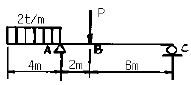
- 8 t
- 9 t
- 10 t
- 12 t
(정답률: 알수없음)
14. 어떤 금속의 탄성계수가 E, 프와송비가 ν일 때 이 금속의 전단 탄성계수 G는 어떻게 표시되는가?
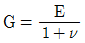
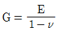
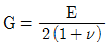
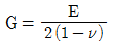
(정답률: 알수없음)
15. 장주에서 좌굴응력에 대한 설명중 틀린 것은?
- 탄성계수에 비례한다.
- 세장비에 반비례한다.
- 좌굴길이의 제곱에 반비례한다.
- 단면2차 모멘트에 비례한다.
(정답률: 알수없음)
16. 단면 폭 20cm, 높이 30cm이고, 길이 6m의 나무로된 단순보의 중앙에 2t의 집중하중이 작용할 때 최대처짐은? (단, E=1.0×105kg/cm2이다.)
- 0.5cm
- 1.0cm
- 2.0cm
- 3.0cm
(정답률: 알수없음)
17. 3연 모멘트법의 사용처로 가장 적당한 곳은?
- 트러스해석
- 연속보해석
- 라멘해석
- 아치해석
(정답률: 알수없음)
18. 그림과 같이 두 개의 활차를 사용하여 물체를 매달 때 3개의 물체가 평형을 이루기 위한 θ값은? (단, 로우프와 활차의 마찰은 무시한다.)
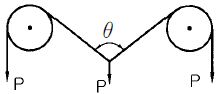
- 30°
- 45°
- 60°
- 120°
(정답률: 알수없음)
19. 다음 그림과 같은 단순보에서 지점 B에 모멘트 하중이 작용할 때 A의 처짐각은 얼마인가?
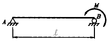
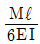
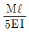
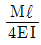
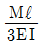
(정답률: 알수없음)
20. 정정 구조물에 비해 부정정 구조물이 갖는 장점을 설명한 것 중 틀린 것은?
- 설계모멘트의 감소로 부재가 절약된다.
- 지점침하등으로 인해 발생하는 응력이 적다.
- 외관이 우아하고 아름답다.
- 부정정구조물은 그 연속성 때문에 처짐의 크기가 작다.
(정답률: 알수없음)
2과목: 측량학
21. 삼각망 중에서 조건식이 많아 정밀도가 가장 높으나 조정이 복잡하고 포괄면적이 적으며 시간과 경비가 많이 드는 것은?
- 단열 삼각망
- 사변형 삼각망
- 유심 다각망
- 삽입망
(정답률: 알수없음)
22. 1km2의 면적이 도면상에서 4cm2일 때의 축척은?
- 1/2500
- 1/5000
- 1/25000
- 1/50000
(정답률: 알수없음)
23. 클로소이드 곡선에 대한 설명으로 옳은 것은?
- 곡선의 반지름 R, 곡선길이 L, 매개변수 A의 사이에는 RL=A2의 관계가 성립한다.
- 곡선의 반지름에 비례하여 곡선길이가 증가하는 곡선이다.
- 곡선길이가 일정할 때 곡선의 반지름이 크면 접선각도 커진다.
- 곡선 반지름과 곡선길이가 같은 점을 동경이라 한다.
(정답률: 알수없음)
24. 등고선에 대한 다음의 설명중 틀린 것은?
- 등고선은 능선 또는 계곡선과 직교한다.
- 등고선은 최대경사선 방향과 직교한다.
- 등고선은 지표의 경사가 급할수록 간격이 좁다.
- 등고선은 어떤 경우라도 서로 교차하지 않는다.
(정답률: 알수없음)
25. 축척 1/1200 지형도 상에서 면적을 측정하는데 축척을 1/1000로 잘못 알고 면적을 산출한 결과 12000m2를 얻었다면 정확한 면적은 얼마인가?
- 8333m2
- 12368m2
- 15806m2
- 17280m2
(정답률: 알수없음)
26. 절토면의 형상이 그림과 같을 때 절토면적은?
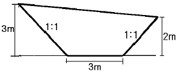
- 11.5m2
- 13.5m2
- 15.5m2
- 17.5m2
(정답률: 알수없음)
27. 그림과 같은 결합 트래버어스의 관측 오차를 구하는 공식은? (단, [α] = α1+α2+… …+αn-1+αn)
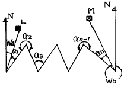
- (Wa-Wb)+[α]-180° (n+1)
- (Wa-Wb)+[α]-180° (n-1)
- (Wa-Wb)+[α]-180° (n-2)
- (Wa-Wb)+[α]-180° (n-3)
(정답률: 알수없음)
28. 노선측량의 캔트(cant) 계산에서 곡선 반지름을 2배로 하면 캔트는 몇 배가 되는가?
- 4배
- 1배
- 1/4배
- 1/2배
(정답률: 알수없음)
29. 비행고도가 일정할 때 사진축척이 가장 작은 사진기는?
- 초광각 사진기
- 광각 사진기
- 보통각 사진기
- 협각 사진기
(정답률: 알수없음)
30. 그림에서 AC 및 DB간에 곡선을 넣으려고 한다. 그런데 교점에 장애물이 있어 ∠ACD=150° , ∠CDB=90° 및 CD의 거리 400m를 측정하였다. C점으로부터 A(B.C)점까지의 거리는? (단, 곡률반경은 500m로 한다.)
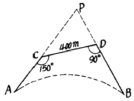
- 461.88m
- 453.15m
- 425.88m
- 404.15m
(정답률: 알수없음)
31. 다음 그림은 평판을 이용한 등고선 측량도이다. (a)에 들어갈 등고선의 높이는 얼마인가?
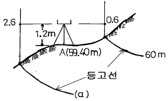
- 59m
- 58m
- 55m
- 50m
(정답률: 알수없음)
32. 평판측량에서 평판을 정치하는데 생기는 오차 중 측량 결과에 가장 큰 영향을 주므로 특히 주의해야 할 것은?
- 수평맞추기 오차
- 중심맞추기 오차
- 방향맞추기 오차
- 앨리데이드의 수준기에 따른 오차
(정답률: 알수없음)
33. 단곡선 설치에서 교점(I.P)까지의 추가거리가 525.50m, 접선장(T.L)이 320m 라고 할 때 시단현의 길이는? (단, 중심 말뚝간의 거리는 20m)
- 2.50m
- 12.50m
- 14.50m
- 17.50m
(정답률: 알수없음)
34. 동일 조건으로 기선 측정을 하여 다음과 같은 결과를 얻었다. 최확값은 얼마인가? (단, 100.521± 0.030m, 100.526± 0.015m, 100.532± 0.045m)
- 100.326m
- 100.425m
- 100.526m
- 100.725m
(정답률: 알수없음)
35. 축척 1/500 지형도(30cm X 30cm)를 기초로 하여 축척이 1/2500인 지형도(30cm×30cm)를 편찬하려면 축척 1/500 지형도가 몇 매 필요한가?
- 5매
- 10매
- 15매
- 25매
(정답률: 알수없음)
36. 수애선을 나타내는 수위로서 어느 기간 동안의 수위중 이것보다 높은 수위와 낮은 수위의 관측수위의 관측수가 같은 수위는?
- 평수위
- 평균수위
- 지정수위
- 평균최고수위
(정답률: 알수없음)
37. 축척이 1/20,000 인 항공사진을 초점거리가 21cm인 카메라로 찍기 위한 알맞은 비행고도는?
- 4.2km
- 3.8km
- 2.6km
- 1.8km
(정답률: 알수없음)
38. 교호수준측량을 한 결과 다음과 같을 때 B점의 표고는? (단, A점의 지반고는 100m이다.)
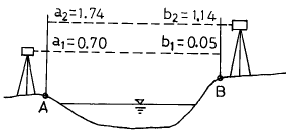
- 100.535m
- 100.625m
- 100.685m
- 100.725m
(정답률: 알수없음)
39. 다음중 측량법에 따른 분류가 아닌 것은?
- 세부측량
- 기본측량
- 일반측량
- 공공측량
(정답률: 알수없음)
40. 방위각 260° 의 역방위는 얼마인가?
- N80° E
- N80° W
- S80° E
- S80° W
(정답률: 알수없음)
3과목: 수리학
41. 다음 설명 중 옳지 않은 것은?
- 침윤선의 형상은 일반적으로 포물선이다.
- 우물로부터 양수할 경우 지하수면으로부터 그 우물에 물이 모여드는 범위를 영향원이라 한다.
- Darcy 법칙에서 지하수의 유속은 동수경사에 반비례 한다.
- 자유지하수는 대기압이 작용하는 지하수면을 갖는 지하수이다.
(정답률: 알수없음)
42. 측정된 강우량 자료가 기상학적 원인 이외에 다른 영향을 받았는지의 여부를 판단하는 즉, 일관성(consistency)에 대한 검사방법은?
- 순간 단위 유량도법
- 합성 단위 유량도법
- 이중 누가 우량 분석법
- 선행 강수 지수법
(정답률: 알수없음)
43. 내경 5㎝인 원관에 160cm3/sec의 물이 흐를 경우 레이놀즈(Reynolds)수는? (단, 물의 동점성 계수 = 0.0101cm2/sec이다.)
- 4036
- 3480
- 3266
- 3180
(정답률: 알수없음)
44. 강수량 자료의 수문학적 해석에 필요 없는 것은?
- 강우강도
- 재현기간
- 수질
- 지역적 범위
(정답률: 알수없음)
45. Darcy-Weisbach의 마찰손실 수두공식
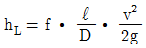
에서 층류인 경우 f의 값은? (단, Re는 레이놀즈수(Reynolds Number) 이다.)- Re/64
- 64/Re
- 1/Re
- 32/Re
(정답률: 알수없음)
46. 물이 흐르고 있는 관의 단면이 일정할 때 어느 두 단면의 위치수두가 각각 50cm 및 20cm, 압력이 각각 1.2kg/cm2 및 0.9kg/cm2이라면 두 단면 사이의 손실수두는?
- 300cm
- 330cm
- 345cm
- 420cm
(정답률: 알수없음)
47. 물의 순환 중 빈 칸에 알맞은 내용으로 묶인 것은?
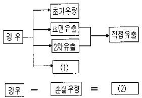
- (1)기저유출, (2)지하수유출
- (1)기저유출, (2)유효우량
- (1)유효우량, (2)기저유출
- (1)유효우량, (2)지하수유출
(정답률: 알수없음)
48. 지름 2m인 원통이 수평으로 가로 놓여 있다. 원통의 상단까지 만수가 되었을 때 이 수문의 단위 폭(1m)에 작용하는 전압력의 연직성분은?
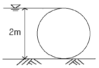
- 1.57ton
- 15.7㎏
- 15.7ton
- 1.57㎏
(정답률: 알수없음)
49. 폭 1.5m인 직사각형 수로에 유량 1.8m3/sec의 물이 항시 수심 1m로 흐르는 경우 이 흐름의 상태는? (단, 에너지보정계수 α = 1.1)
- 상류
- 한계류
- 사류
- 부정류
(정답률: 알수없음)
50. 유체의 점성(viscosity)에 대한 설명으로 옳은 것은?
- 점성계수는 전단응력(τ )을 속도구배(∂v/∂y)로 나눈 값이다.
- 동점성계수는 점성계수에 밀도를 곱한 값이다.
- 액체의 경우 온도가 상승하면 점성도 함께 커진다.
- 유체의 비중을 알 수 있는 척도이다.
(정답률: 알수없음)
51. 오리피스에서 수축계수(Ca)가 0.64, 유속계수(Cv)가 0.98일 때 유량계수(Ｃ)는 얼마인가?
- 0.63
- 0.65
- 0.98
- 1.53
(정답률: 알수없음)
52. 바다의 수중에서 압력을 측정하였더니 41㎏/cm2이었다면 이 지점의 깊이는? (단, 바닷물의 단위중량은 1025㎏/m3)
- 0.04m
- 0.4m
- 40.0m
- 400.0m
(정답률: 알수없음)
53. 개수로에서 발생되는 흐름중 상류와 사류를 구분하는 기준이 되는 것은?
- 후르드(Froude)수
- 레이놀즈(Reynolds)수
- 마하(mach)각
- 매닝(Manning)수
(정답률: 알수없음)
54. 관의 직경과 유속이 다른 두 개의 병렬 관수로(looping pipe line)에 대한 설명 중 옳은 것은?
- 각 관의 수두손실은 전손실을 구하기 위하여 합한다.
- 각 관에서의 유량은 같다고 본다.
- 각 관에서의 손실수두는 같다고 본다.
- 전 유량이 주어지면 각 관의 유량은 등분하여 결정한다.
(정답률: 알수없음)
55. 부체가 안정되기 위한 조건으로 옳은 것은? (단, C=부심, G=중심, M=경심)
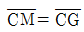
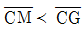
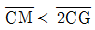
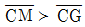
(정답률: 알수없음)
56. 빙산이 바다 위에 떠있다. 해수면상의 부피가 900m3이면 빙산 전체의 부피는 얼마인가? (단, 빙산의 비중은 0.92, 해수의 비중은 1.025이다.)
- 8785.7m3
- 7758.7m3
- 6758.7m3
- 9785.7m3
(정답률: 알수없음)
57. 모세관 현상에 의해서 물이 관내로 올라가는 높이(h)와 관의 직경(D)과의 관계로 옳은 것은?
- h ∝ D2
- h ∝ D
- h ∝ 1/D
- h ∝ 1/D2
(정답률: 40%)
58. 그림과 같은 완전 수중 오리피스에서 유속을 구하려고 할 때 사용되는 수두는?
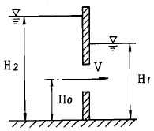
- H1-H0
- H2-H1
- H2-H0
- H1+H2/2
(정답률: 알수없음)
59. 유역면적 40km2인 어떤 유역에 15시간 지속된 강우로 인한 총우량이 31.5㎝발생하고, 직접유출량이 10648800m3이었다면 손실우량은?
- 1.26㎝
- 2.45㎝
- 4.88㎝
- 8.49㎝
(정답률: 알수없음)
60. 동수경사선(hydraulic grade line)에 대한 설명으로 가장 옳은 것은?
- 위치수두를 연결한 선이다.
- 속도수두와 위치수두를 합해 연결한 선이다.
- 압력수두와 위치수두를 합해 연결한 선이다.
- 전수두를 연결한 선이다.
(정답률: 알수없음)
4과목: 철근콘크리트 및 강구조
61. 아래 조건에서 슬래브와 보가 일체로 타설된 대칭 T형보의 유효폭은 얼마인가?
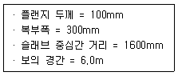
- 1500mm
- 1600mm
- 1900mm
- 2000mm
(정답률: 알수없음)
62. 다음 그림의 고장력 볼트 마찰이음에서 필요한 볼트 수는 몇 개인가?(볼트는 M24(=ø24mm), F10T를 사용하며, 마찰이음의 허용력은 5600kgf이다.)
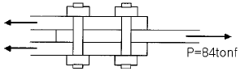
- 5개
- 6개
- 7개
- 8개
(정답률: 알수없음)
63. 단면이 300×500mm 이고 150mm2의 PS 강선 6개를 강선군의 도심과 부재단면의 도심축이 일치하도록 배치된 프리텐숀 PC 부재가 있다. 강선의 초기 긴장력이 1000MPa일 때 콘크리트의 탄성변형에 의한 프리스트레스의 감소량은 얼마인가? (단, n = 6)
- 36 MPa
- 30 MPa
- 6 MPa
- 4.8 MPa
(정답률: 알수없음)
64. PS 긴장재의 배치 방법에 의한 역학적 효과를 고려할 때 장대 교량에 유리한 배치 방법은?
- 직선으로 도심에 배치
- 절선 배치
- 직선으로 편심 배치
- 곡선 배치
(정답률: 알수없음)
65. 2 방향 슬래브에서 사인장 균열이 집중하중 또는 집중반력 주위에서 펀칭전단(원뿔대 혹은 각뿔대 모양)이 일어나는 것으로 판단될 때의 위험단면은 어느 것인가?
- 집중하중이나 집중반력을 받는 면의 주변단면
- 집중하중이나 집중반력을 받는 면의 주변에서 d 만큼떨어진 주변단면
- 집중하중이나 집중반력을 받는 면의 주변에서 d/2 만큼 떨어진 주변단면
- 집중하중이나 집중반력을 받는 면의 주변에서 d/4 만큼 떨어진 주변단면
(정답률: 알수없음)
66. 폭 300mm, 응력사각형의 깊이 80mm인 단철근 직사각형 보에서 콘크리트 압축강도가 28MPa이라면 콘크리트의 전압축력 C는 얼마인가?
- 499.8kN
- 571.2kN
- 582.4kN
- 598.7kN
(정답률: 알수없음)
67. 그림의 T형보에서 플랜지의 내민부분(빗금)의 압축력과 비길 수 있는 철근 단면적 Asf는?
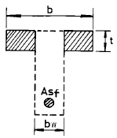
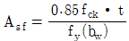
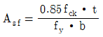
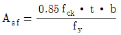
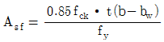
(정답률: 알수없음)
68. 그림과 같은 단철근 직4각형보의 설계모멘트강도(øMn)를 계산하면? (단, 이 보는 규정을 만족하는 과소철근보로서 fck=21MPa, fy = 300MPa이다.)
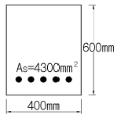
- 506.1 kN·m
- 558.8 kN·m
- 594.6 kN·m
- 632.7 kN·m
(정답률: 알수없음)
69. 그림과 같은 나선철근기둥에서 콘크리트구조설계기준에서 요구하는 최소 나선철근의 간격은 약 얼마인가? (단, fck=24MPa, fy=400MPa)
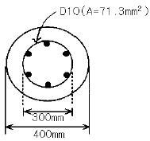
- 35 mm
- 40 mm
- 45 mm
- 70 mm
(정답률: 알수없음)
70. 현행 콘크리트구조설계기준(2003)의 강도설계법에서 콘크리트가 부담하는 공칭전단 강도식으로 맞는 것은?
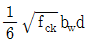
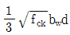
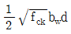
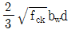
(정답률: 알수없음)
71. 설계기준강도가 fck=25MPa 일 때 현행 콘크리트구조설계기준(2003)에 의거 평균 소요배합강도 fcr은 얼마인가? (단, 압축강도의 시험횟수가 14회 이하인 경우)
- fcr=28.8MPa
- fcr=31.2MPa
- fcr=33.5MPa
- fcr=25.0MPa
(정답률: 알수없음)
72. 콘크리트에 프리스트레스를 주는 방법에 대한 설명중 틀린 것은?
- 프리텐션 방식은 PS강재를 먼저 긴장한 후 콘크리트를 치고 콘크리트가 경화한 뒤 강재의 긴장을 푸는 방법이다.
- 포스트텐션 방식은 콘크리트 속에 덕트와 강재를 배치하고 콘크리트 타설과 동시에 PS강재를 긴장시키는 방법이다.
- 완전 프리스트레싱이란 사용하중이 작용할 때 어느 콘크리트 부재의 단면에도 인장응력이 생기지 않도록 하는 방법이다.
- 부분프리스트레싱이란 사용하중이 작용할 때 부재 단면에 인장응력이 생기는 것을 허용하는 방법이다.
(정답률: 알수없음)
73. 철근콘크리트 보에 스터럽을 배근하는 가장 주된 이유는?
- 보에 작용하는 전단응력에 의한 균열을 막기 위하여
- 콘크리트와 철근의 부착을 잘되게 하기 위하여
- 압축측의 좌굴을 방지하기 위하여
- 인장철근의 응력을 분포시키기 위하여
(정답률: 알수없음)
74. 철근의 피복두께에 관한 설명 중 틀린 것은?
- 철근이 산화되지 않도록 한다.
- 부착응력을 확보한다.
- 침식이나 염해 또는 화학작용으로부터 철근을 보호한다.
- 주철근의 표면에서 콘크리트의 표면까지의 최단거리이다.
(정답률: 알수없음)
75. 강도설계법에서 직사각형 단철근보의 균형철근비 임b는? (단, fck= 20MPa, fy= 300MPa 이다.)
- 0.032
- 0.035
- 0.038
- 0.048
(정답률: 알수없음)
76. 강도설계법으로 전단과 비틀림을 받는 콘크리트 부재를 설계할 때 사용되는 강도감소계수 ø는 얼마인가?
- 0.70
- 0.85
- 0.80
- 0.75
(정답률: 알수없음)
77. 콘크리트의 크리프에 대한 설명으로 틀린 것은?
- 물·시멘트비가 클수록 크리프가 크게 일어난다.
- 고강도 콘크리트인 경우 크리프가 증가한다.
- 온도가 높을수록 크리프가 증가한다.
- 상대습도가 높을수록 크리프가 작게 발생한다.
(정답률: 알수없음)
78. 다음 전단철근의 종류에 대한 설명 중 옳지 않은 것은?
- 부재의 축에 직각인 스터럽
- 부재의 축에 직각으로 배치된 용접철망
- 주인장철근에 15° 이상의 각도로 구부린 굽힘 철근
- 나선철근
(정답률: 알수없음)
79. 다음 식 중 나선철근 압축부재의 최대 축방향 설계강도 øPn을 나타낸 것은? (단, 프리스트레스를 가하지 않은 부재의 경우)
- øPn=0.85ø(0.85fckAg+fyAst)
- øPn=0.80ø(0.85fckAg+fyAst)
- øPn=0.85ø[0.85fck(Ag-Ast)+fyAst]
- øPn=0.80ø[0.85fck(Ag-Ast)+fyAst]
(정답률: 알수없음)
80. 그림과 같이 인장력을 받는 두 강판을 볼트로 연결할 경우 발생할 수 있는 파괴모드(failure mode)가 아닌 것은?
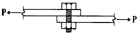
- 볼트의 전단파괴
- 볼트의 인장파괴
- 볼트의 지압파괴
- 강판의 지압파괴
(정답률: 알수없음)
5과목: 토질 및 기초
81. 3층 구조로 구조결합 사이에 불치환성 양이온이 있어서 수축 팽창은 거의 없지만 안정성은 중간 정도의 점토 광물은?
- Silt
- illite
- kaolinite
- montmorillonite
(정답률: 알수없음)
82. 점토지반을 수평면과 63° 의 기울기로 무지보 굴착을 하려한다. 이 흙의 단위중량이 1.8t/m3, 점착력이 2.0t/m2이라고 할때 안전율을 1.5로 하여 굴토깊이를 결정한 것으로 옳은 것은?
- 4.8m
- 3.8m
- 2.4m
- 1.4m
(정답률: 알수없음)
83. 다음 설명 중 동상에 대한 대책이 아닌 것은?
- 실트질 흙으로 치환한다.
- 배수구를 설치하여 지하수위를 낮춘다.
- 모관수의 상승을 차단한다.
- 지표부근에 단열재료를 매립한다.
(정답률: 알수없음)
84. CBR 시험을 한 결과 관입량이 5.0㎜일 때의 CBR5.0값이 관입량 2.5㎜일 때의 CBR2.5값보다 클 때에는 재시험을 해야하고 재시험을 해도 CBR5.0이 클 때에는 어떤 값을 CBR로 하는가?
- CBR2.5
- CBR5.0
- CBR2.5+CBR5.0/2
- CBR2.5+CBR5.0
(정답률: 알수없음)
85. 다음 토질 시험중 도로의 포장 두께를 정하는데 많이 사용되는 것은?
- 표준관입시험
- C.B.R 시험
- 삼축압축시험
- 다짐시험
(정답률: 알수없음)
86. 점토의 예민비(Sensitivity ratio)는 다음 시험중 어떤 방법으로 구하는가?
- 삼축압축시험
- 일축압축시험
- 직접전단시험
- 베인시험
(정답률: 알수없음)
87. 연약점토 지반에 성토할 때 다음 공법 중 이용도가 가장 낮은 것은?
- 치환 공법
- Pre-loading 공법
- Sand-drain 공법
- Soil-Cement 공법
(정답률: 알수없음)
88. 다음 중 직접기초에 속하는 것은?
- 후팅기초
- 말뚝기초
- 피어기초
- 케이슨기초
(정답률: 알수없음)
89. 어느 흙댐에서 동수구배 1.0, 흙의 비중이 2.65,함수비 45%인 포화토에 있어서 분사현상에 대한 안전율은 얼마인가?
- 1.33
- 1.04
- 0.90
- 0.75
(정답률: 알수없음)
90. 말뚝기초에서 부마찰력(nagative skin friction)에 대한 설명이다. 옳지 않은 것은?
- 지하수위 저하로 지반이 침하할 때 발생한다.
- 지반이 압밀진행중인 연약점토 지반인 경우에 발생한다.
- 발생이 예상되면 대책으로 말뚝주면에 역청으로 코팅하는 것이 좋다.
- 말뚝 주면에 상방향으로 작용하는 마찰력이다.
(정답률: 알수없음)
91. 포화된 흙의 함수비가 40%, 비중이 2.71인 경우 건조 단위 중량은 얼마인가?
- 1.3t/m3
- 1.5t/m3
- 1.7t/m3
- 1.8t/m3
(정답률: 알수없음)
92. 채취된 시료의 교란정도는 면적비를 계산하여 통상 면적비가 몇 % 이하이면 잉여토의 혼입이 불가능한 것으로 보고 불교란 시료로 간주하는가?
- 5%
- 7%
- 10%
- 15%
(정답률: 알수없음)
93. 흙의 다짐에 대한 다음 사항 중 옳지 않은 것은?
- 최적 함수비로 다질때에 건조밀도는 최대가 된다.
- 세립토의 함유율이 증가할수록 최적 함수비는 증대된다.
- 다짐에너지가 클수록 최적 함수비는 커진다.
- 점성토는 조립토에 비하여 다짐곡선의 모양이 완만하다.
(정답률: 알수없음)
94. 흙의 모관현상에 관한 다음 설명중 옳지 않은 것은?
- 모래와 같은 조립토에서는 모관 상승속도가 빠르다.
- 점토와 같은 세립토에서는 모관 상승고는 매우 낮다.
- 모관상승 부분의 압력은 부압(負壓)이 된다.
- 모관고는 공극비에 반비례한다.
(정답률: 알수없음)
95. 분사현상(quick sand action)에 관한 그림이 아래와 같을 때 수두차 h를 최소 얼마 이상으로 하면 모래시료에 분사현상이 발생하겠는가? (단, 모래의 비중 2.60, 공극율 50%)
- 6㎝
- 12㎝
- 24㎝
- 30㎝
(정답률: 알수없음)
96. 점토층이 소정의 압밀도에 도달 소요시간이 단면배수일 경우 4년이 걸렸다면 양면배수 일 때는 몇 년이 걸리겠는가?
- 1년
- 2년
- 4년
- 16년
(정답률: 알수없음)
97. 건조한 흙의 직접 전단시험 결과 수직응력이 4㎏/cm2 일 때 전단저항은 3㎏/cm2이고 점착력은 0.5㎏/cm2 이었다. 이 흙의 내부마찰각은?(오류 신고가 접수된 문제입니다. 반드시 정답과 해설을 확인하시기 바랍니다.)
- 30.2°
- 32°
- 36.8°
- 41.2°
(정답률: 알수없음)
98. 어떤 시료에 대하여 일축압축 강도 시험을 실시한 결과 파괴강도가 3t/m2 이었다. 이 흙의 점착력은? (단, ø = 0° 인 점성토이다.)
- 1.0 t/m2
- 1.5 t/m2
- 2.0 t/m2
- 2.5 t/m2
(정답률: 알수없음)
99. 다음중에서 정지토압 Po, 주동토압 PA, 수동토압 Pp의 크기 순서가 옳은 것은 어느 것인가?
- Pp < Po < PA
- Po < PA < Pp
- Po < Pp < PA
- PA < Po < Pp
(정답률: 알수없음)
100. 다음 상대밀도에 대한 설명으로 옳은 것은?
- 주로 점토와 같은 세립토에 사용된다.
- 60%정도이면 느슨한 상태이다.
- 보통 진동 다짐에 의하여 emax, 건조모래를 가만히 유입함으로서 emin을 측정한다.
- 흙의 조밀 또는 느슨한 상태를 알려할 때 공극비만으로는 명확하지 못하므로 상대밀도를 사용한다.
(정답률: 알수없음)
6과목: 상하수도공학
101. 하수처리장 침전지의 수심이 3m이고, 표면 부하율이 36m3/m2.day일 때 침전지에서의 체류시간은 얼마인가?
- 30분
- 1시간
- 2시간
- 3시간
(정답률: 알수없음)
102. 우리나라 하수도 계획의 목표년도는 원칙적으로 몇 년으로 하는가?
- 10년
- 15년
- 20년
- 30년
(정답률: 알수없음)
103. stokes 법칙이 가장 잘 적용되는 침전형태는?
- 단독침전
- 응집침전
- 지역침전
- 압축침전
(정답률: 알수없음)
104. 계획1인1일 평균급수량에 대한 설명 중 틀린 것은?
- 도시규모가 클수록 평균급수량은 증가한다.
- 생활수준이 높을수록 평균급수량은 증가한다.
- 수압이 낮을수록 평균급수량은 증가한다.
- 누수량이 많을수록 평균급수량은 증가한다.
(정답률: 알수없음)
1⑤. 저수지의 수원에서 부영양화를 방지하는데 대책이 잘못된 것은?
- 영양염류 공급
- 황산구리 투여
- N, P 유입 방지
- 고도 하수처리 도입
(정답률: 알수없음)
106. 하수처리장 2차침전지에서 슬러지 부상이 일어날 경우 관계되는 작용은?
- 질산화반응
- 탈질반응
- 핀플록반응
- 미생물 플록이 형상 안됨
(정답률: 알수없음)
107. 급속여과방식의 정수방법에서는 전처리로서 응집제의 투입이 불가피하다. 다음 중 응집제로 적절하지 않은 것은?
- 염화제2철
- 황산알루미늄
- 수산화나트륨
- 황산제1철
(정답률: 알수없음)
108. 하수도의 목적에서 하수도에 요구하는 기본적인 요건이 아닌 것은?
- 오수의 배제
- 우수의 배제
- 유량 공급
- 오탁수의 처리
(정답률: 알수없음)
109. 직경이 40cm인 주철관에 0.25m3/sec의 유량이 흐르고 있다. 이 관로 700m에서 생기는 손실수두를 Manning의 식에 의해 구하면 얼마인가? (단, n=0.012 이다)
- 2.1m
- 4.2m
- 8.6m
- 12.6m
(정답률: 알수없음)
110. 하수관망의 설계시 고려할 사항에 대한 설명으로 틀린 것은?
- 경사는 하류로 갈수록 커진다.
- 유속은 하류로 갈수록 커진다.
- 차집관거에서의 계획하수량은 우천시 계획오수량으로 한다.
- 조도계수는 매닝(Manning)식은 철근콘크리트관의 경우 0.013을 표준으로 한다.
(정답률: 알수없음)
111. 하수관거가 갖추어야 할 특성에 대한 설명으로 옳지 않은 것은?
- 관내의 내면이 매끈하고 조도계수가 클 것
- 경제성이 있도록 가격이 저렴할 것
- 산· 알카리에 대한 내구성이 양호할 것
- 외압에 대한 강도가 높고 파괴에 대한 저항력이 클것
(정답률: 알수없음)
112. 수원지에서 가정의 수도꼭지까지에 이르는 급수계통을 잘 나타낸 것은?
- 취수 - 도수 - 정수 - 송수 - 배수 - 급수
- 취수 - 송수 - 정수 - 도수 - 급수 - 배수
- 취수 - 도수 - 정수 - 배수 - 송수 - 급수
- 취수 - 도수 - 송수 - 정수 - 배수 - 급수
(정답률: 알수없음)
113. 강우강도 분 , 유역면적 5km2, 유입시간 4분, 유출계수 0.85, 하수관거내 유속 40m/min인 경우 1km의 하수관거내 우수량은?
- 22.5m3/sec
- 24.7m3/sec
- 35.6m3/sec
- 39.6m3/sec
(정답률: 알수없음)
114. 우리나라의 상수도 시설을 설계, 계획할 때 그 계획 년한 은 통상 몇년을 기준으로 하는가?
- 2~3년
- 5~15년
- 20~30년
- 50년이상
(정답률: 알수없음)
115. 개수로와 관수로의 근본적인 차이점은 무엇인가?
- 수압의 고저
- 자유수면의 유무
- 지상매설과 지하매설
- 수로의 덮개 유무
(정답률: 알수없음)
116. 상수의 정수방법중 염소살균과 오존살균의 장∙단점을 잘못 설명한 것은?
- 염소살균은 발암물질인 트리할로메탄(THM)을 생성시킬 가능성이 있다.
- 오존살균은 염소살균에 비하여 잔류성이 약하다.
- 오존의 살균력은 염소보다 우수하다.
- 오존살균은 염소살균에 비해 경제적이다.
(정답률: 알수없음)
117. 유량(Q)이 45m3/hr, 흡입구의 유속(V)이 3m/sec 일 때 펌프의 구경(D)은 몇 mm로 하여야 하는가?
- 73mm
- 70mm
- 67mm
- 64mm
(정답률: 알수없음)
118. 상수의 일반적인 정수과정으로 가장 옳은 것은?
- 여과 - 응집침전 - 살균
- 살균 - 응집침전 - 여과
- 응집침전 - 여과 - 살균
- 여과 - 살균 - 응집침전
(정답률: 알수없음)
119. 관로유속의 급격한 변화로 인한 충격현상으로 관내압력이 급상승 또는 급강하하는 현상을 무엇이라 하는가?
- 공동현상
- 수격현상
- 진공현상
- 부압현상
(정답률: 알수없음)
120. 하수의 배제 방법중 오수관과 우수관을 별도로 설치하는 방식을 무엇이라 하는가?
- 합류식
- 합리식
- 분류식
- 차집식
(정답률: 알수없음)